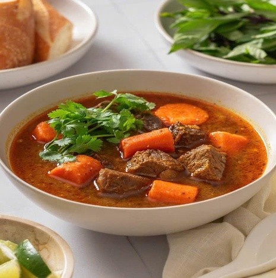
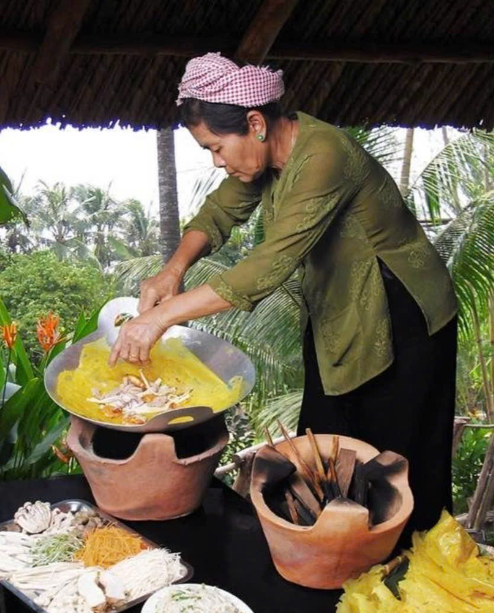

🏝️ Giới thiệu về Ba Tri
Ba Tri là huyện ven biển thuộc tỉnh Bến Tre, nổi tiếng với nền ẩm thực dân dã, mộc mạc nhưng đậm đà hương vị miền biển và sông nước. Các món ăn nơi đây phản ánh rõ nét đời sống sinh hoạt và lao động của người dân địa phương.

Với vị trí địa lý đặc biệt, Ba Tri có điều kiện phát triển nhiều món ăn từ hải sản tươi ngon cùng các đặc sản được chế biến theo phương pháp truyền thống, lưu giữ hương vị đặc trưng qua nhiều thế hệ.
Hãy cùng khám phá những món ăn đặc sắc và hấp dẫn của vùng đất Ba Tri qua trang web này để hiểu hơn về văn hóa ẩm thực phong phú và đa dạng của quê hương chúng tôi.
👥 Thông tin nhóm thực hiện
Chủ đề: Ẩm thực Ba Tri
Nhóm thực hiện: Nhóm 3 – Lớp 12A1
Nguyễn Thị Anh Thư
👑 Nhóm trưởng
- Lên bố cục web
- Phân công nhiệm vụ
- Tổng hợp và nộp bài
- Tham gia: 100%
- SĐT: 0344068224
Đào Phạm Bảo Hân
✍️ Thành viên 1
- Viết nội dung
- Giới thiệu món ăn
- Tham gia: 100%
Lê Thị Huế Anh
💻 Thành viên 2
- Thiết kế web (HTML/CSS)
- Làm thanh điều hướng
- Chỉnh sửa giao diện
- Tham gia: 100%
Nguyễn Thị Thiên Kim
🎨 Thành viên 3
- Làm phần Giới thiệu nhóm
- Phần Liên hệ
- Phần chân trang (Footer)
- Kiểm tra và hoàn thiện web
- Tham gia: 100%
🍲 Món ăn đặc trưng Ba Tri
Ba Tri có nhiều món ăn đặc trưng với hương vị đậm đà, phản ánh nét văn hóa ẩm thực của vùng đất sông nước. Dưới đây là những món ăn nổi bật nhất của địa phương.
🍖 Bò kho Ba Tri
Thịt bò hầm mềm với gia vị truyền thống, nước dùng đậm đà, thường ăn kèm bánh mì hoặc hủ tiếu. Món bò kho Ba Tri có hương vị đặc biệt với sự kết hợp của nhiều loại gia vị như sả, gừng, hành tím và nước dừa non.
Đây là món ăn được nhiều gia đình lựa chọn trong những dịp đặc biệt, với hương thơm nồng nàn và vị ngọt tự nhiên từ thịt bò hầm chín mềm.
🥩 Bò nướng
Thịt bò ướp gia vị, nướng trên than hồng, thơm ngon hấp dẫn. Thịt bò được ướp với mật ong, nước màu và các loại gia vị đặc biệt tạo nên lớp vỏ ngoài giòn rụm, trong mềm mọng.
Món bò nướng thường được ăn kèm với bánh tráng, rau sống và nước chấm đặc biệt, tạo nên một trải nghiệm ẩm thực khó quên cho thực khách.
🥞 Bánh xèo Ba Tri
Vỏ giòn rụm, nhân tôm thịt, ăn kèm rau sống và nước mắm chua ngọt. Bánh xèo Ba Tri có lớp vỏ vàng óng, được làm từ bột gạo pha với bột nghệ và nước cốt dừa tạo nên độ giòn tan đặc trưng.
Món ăn dân dã nhưng đầy hấp dẫn này thể hiện sự khéo léo trong cách chế biến và kết hợp nguyên liệu của người dân Ba Tri.
🌊 Đặc sản biển Ba Tri
Là huyện ven biển, Ba Tri có nhiều đặc sản từ biển được chế biến theo phương pháp truyền thống, mang đậm hương vị miền biển Nam Bộ. Những sản phẩm này không chỉ ngon mà còn lưu giữ được nét văn hóa ẩm thực đặc trưng của địa phương.

🐟 Mắm cá lóc, mắm cá sặc
Đặc sản truyền thống mang hương vị mặn mà đặc trưng miền biển. Mắm cá Ba Tri được làm từ cá tươi, ủ theo công thức gia truyền với thời gian lên men vừa đủ, tạo nên hương vị đậm đà, thơm ngon.
Đây là gia vị không thể thiếu trong các bữa cơm của người dân Ba Tri, mang đến hương vị đặc trưng cho nhiều món ăn từ kho, nấu đến chấm.
🦐 Tôm khô Ba Tri
Tôm được phơi khô tự nhiên, thịt chắc và ngọt. Tôm khô Ba Tri nổi tiếng với chất lượng cao, được làm từ tôm tươi sống đánh bắt tại vùng biển Ba Tri.
Sau khi phơi khô, tôm giữ được độ thơm ngọt tự nhiên, thịt chắc và có màu đỏ cam đẹp mắt. Có thể dùng để nấu canh, rim hoặc làm mắm tôm thơm ngon bổ dưỡng.


🐠 Cá khô một nắng
Cá tươi phơi đúng một nắng, giữ được độ mềm và vị đậm đà. Cá khô một nắng là đặc sản được chế biến theo phương pháp đặc biệt: cá tươi sống được phơi dưới nắng trong một ngày, vừa đủ để cá khô bên ngoài nhưng vẫn giữ được độ mềm mọng bên trong.
Món ăn này có vị ngọt tự nhiên của cá biển, thường được nướng hoặc chiên giòn ăn kèm cơm, mang lại trải nghiệm ẩm thực khó quên.
💡 Đặc điểm chung của đặc sản biển Ba Tri
Các đặc sản biển Ba Tri đều có những điểm chung:
- ✓ Được chế biến từ nguyên liệu tươi sống đánh bắt tại chỗ
- ✓ Sử dụng phương pháp bảo quản truyền thống, không chất bảo quản
- ✓ Giữ được hương vị tự nhiên, đậm đà của biển
- ✓ Là món quà ý nghĩa khi du khách đến thăm Ba Tri
📞 Liên hệ với chúng tôi
Nếu bạn muốn tìm hiểu thêm về ẩm thực Ba Tri hoặc đóng góp ý kiến cho trang web, vui lòng liên hệ với nhóm thực hiện theo thông tin sau:
📋 Thông tin nhóm thực hiện
Nhóm thực hiện: Nhóm 3 – Lớp 12A1
Trường: THPT Phan Liêm
📧 Email: amthucbatri@gmail.com
📱 Số điện thoại: 0987570072
💬 Gửi ý kiến đóng góp
Chúng tôi luôn mong muốn nhận được những ý kiến đóng góp từ bạn để cải thiện chất lượng trang web. Bạn có thể liên hệ với chúng tôi qua:
- 📧 Gửi email đến: amthucbatri@gmail.com
- 📞 Gọi điện thoại: 0987570072
- 👥 Xem thông tin nhóm: Thành viên nhóm
🎯 Mục đích của trang web
Trang web này được xây dựng với mục đích:
- Giới thiệu và quảng bá ẩm thực Ba Tri đến với mọi người
- Lưu giữ và truyền bá các món ăn truyền thống của địa phương
- Thực hành môn Tin học: Thiết kế trang web
- Góp phần phát triển du lịch và văn hóa ẩm thực Ba Tri
Mọi ý kiến đóng góp của bạn sẽ giúp trang web ngày càng hoàn thiện hơn.
Xin chân thành cảm ơn!